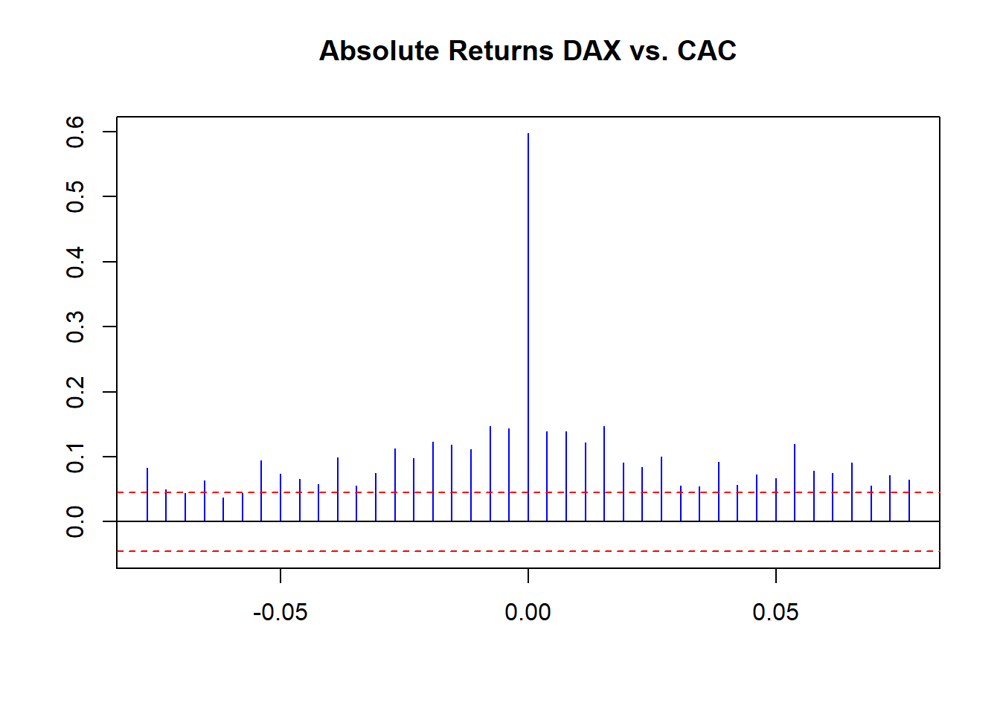
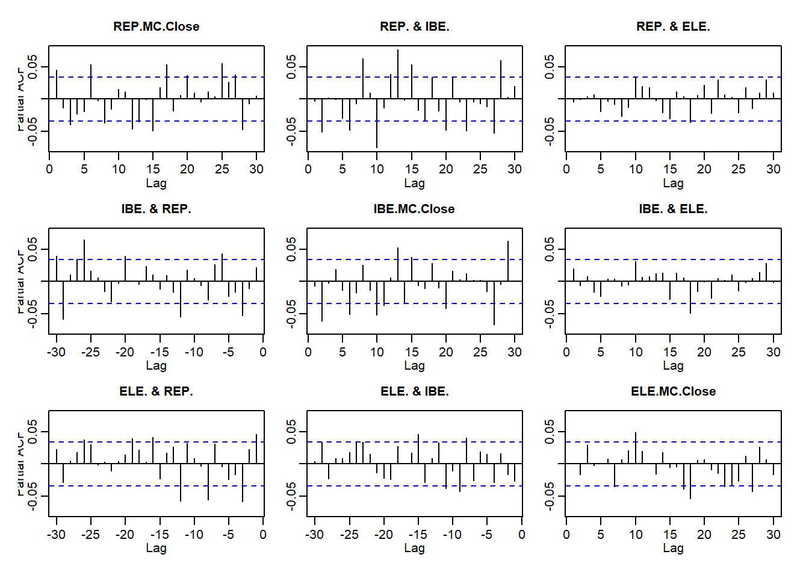

Chapter 4 Macrofinancial Data Analysis
4.1 Imagine This
Your US-based company just landed a contract worth more than 20 percent of your company’s current revenue in Spain. Now that everyone has recovered from this coup, your management wants you to
- Retrieve and begin to analyze data about the Spanish economy
- Compare and contrast Spanish stock market and government-issued debt value versus the United States and several other countries
- Begin to generate economic scenarios based on political events that may, or may not, happen in Spain
Up to this point we had reviewed several ways to manipulate data in R. We then reviewed some basic finance and statistics concepts in R. We also got some idea of the financial analytics workflow.
- What decision(s) are we making?
- What are the key business questions we need to support this decision?
- What data do we need?
- What tools do we need to analyze the data?
- How do we communicate answers to inform the decision?
4.1.1 Working an example
Let’s use this sequence to motivate our work in this here.
We identify a decision at work (e.g., investment in a new machine, financing a building, acquisition of customers, hiring talent, locating manufacturing).
For this decision we will list three business questions we need to inform the decision we chose.
Now we consider data we might need to answer one of those questions and choose from this set:
- Macroeconomic data: GDP, inflation, wages, population
- Financial data: stock market prices, bond prices, exchange rates, commodity prices
Here is the example using the scenario that started us off.
- Our decision is supply a new market segment
- Product: voltage devices with supporting software
- Geography: Spain
- Customers: major buyers at Iberdrola, Repsol, and Endesa
- We pose three business questions:
- How would the performance of these companies affect our ability to serve our customers and produce?
- How would the value of their products affect the value of our business with these companies?
- We are a US functional currency firm (see FAS 52), so how would we manage the repatriation of accounts receivable from Spain?
- Some data and analysis to inform the decision could include
- Customer stock prices: volatility and correlation
- Oil prices: volatility
- USD/EUR exchange rates: volatility
- All together: correlations among these indicators
Volatility and correlation relate to the variability and co-variability of the values of these three companies. Each can have an up and a downside. Are there any systematically occurring patterns we need to be aware of as we design and implement our business plan?
4.1.2 How we will proceed
This chapter will develop stylized facts of the market. These continue to be learned the hard Way: financial data is not independent, it possesses volatile volatility, and has extremes.
- Financial stock, bond, commodity…you name it…have highly interdependent relationships.
- Volatility is rarely constant and often has a structure (mean reversion) and is dependent on the past.
- Past shocks persist and may or may not dampen (rock in a pool).
- Extreme events are likely to happen with other extreme events.
- Negative returns are more likely than positive returns (left skew).
- One market’s volatility can spill over into another markets’s volatility further exacerbating persistent high aand low volatility.
Many of these stylized facts are common to several areas of economic life and even more so to financial assets (???). Some of the mechanisms for persistent volatility include trading strategies (e.g., momentum and level trading). Others involve the digestion of information by traders who hedge versus those who speculate. Whatever the reasons, managers who depend on prices of purchased goods and services as well as receipts from customers, will see volatility in their earnings and cash flow.
4.2 Building the Stylized Facts
Examples from the 70s, 80s, and 90s have multiple intersecting global events influencing decision makers. We will load some computational help and some data from Brent, format dates, and create a time series object (package zoo' will be needed by packagesfBasicsandevir`):
## An 'xts' object on 1987-05-20/2015-12-28 containing:
## Data: num [1:7258, 1] 18.6 18.4 18.6 18.6 18.6 ...
## - attr(*, "dimnames")=List of 2
## ..$ : NULL
## ..$ : chr "OIL_Brent"
## Indexed by objects of class: [Date] TZ: UTC
## xts Attributes:
## NULLWe will compute rates of change for Brent oil prices next.
## 'zoo' series from 1987-05-20 to 2015-12-28
## Data: num [1:7258, 1] 18.6 18.4 18.6 18.6 18.6 ...
## - attr(*, "dimnames")=List of 2
## ..$ : NULL
## ..$ : chr "OIL_Brent"
## Index: Date[1:7258], format: "1987-05-20" "1987-05-21" "1987-05-22" "1987-05-25" "1987-05-26" ...Brent.return <- diff(log(Brent.price))[-1] * 100
colnames(Brent.return) <- "Brent.return"
head(Brent.return, n = 5)## Brent.return
## 1987-05-22 0.5405
## 1987-05-25 0.2692
## 1987-05-26 0.1612
## 1987-05-27 -0.1612
## 1987-05-28 0.0000## Brent.return
## 2015-12-21 -3.9395
## 2015-12-22 -0.2266
## 2015-12-23 1.4919
## 2015-12-24 3.9178
## 2015-12-28 -0.3769Let’s look at this data with box plots and autocorrelation functions. Box plots will show minimum to maximum with the mean in the middle of the box. Autocorrelation plots will reveal how persistent the returns are over time.
We run these statements.
boxplot(as.vector(Brent.return), title = FALSE, main = "Brent Daily % Change", col = "blue", cex = 0.5, pch = 19)
skewness(Brent.return)
kurtosis(Brent.return)This time series plot shows lots of return clustering and spikes, especially negative ones.
Performing some “eyeball econometrics” these clusters seem to occur around - The oil embargo of the ’70s - The height of the new interest rate regime of Paul Volcker at the Fed - “Black Monday” stock market crash in 1987 - Gulf I - Barings and other derivatives business collapses in the ’90s
- Let’s look at the likelihood of positive versus negative returns. We might want to review skewness and kurtosis definitions and ranges to help us.
Now to look at persistence:
acf(coredata(Brent.return), main = "Brent Daily Autocorrelogram", lag.max = 20, ylab = "", xlab = "", col = "blue", ci.col = "red")
pacf(coredata(Brent.return), main = "Brent Daily Partial Autocorrelogram", lag.max = 20, ylab = "", xlab = "", col = "blue", ci.col = "red")Confidence intervals are the red dashed lines. ACF at lag 6 means the correlation of current Brent returns with returns 6 trading days ago, including any correlations from trading day 1 through 6. PACF is simpler: it is the raw correlation between day 0 and day 6. ACF starts at lag 0 (today); PACF starts at lag 1 (yesterday).
How many trading days in a typical week or in a month? Comment on the spikes (blue lines that grow over or under the red dashed lines).
How thick is that tail?
Here is a first look:
… with some basic stats to back up the eyeball econometrics in the box plot:
## [1] -0.621
## attr(,"method")
## [1] "moment"## [1] 14.62
## attr(,"method")
## [1] "excess"- A negative skew means there are more observations less than the median than greater.
- This high a kurtosis means a pretty heavy tail, especially in negative returns. That means they have happened more often than positive returns.
- A preponderance of negative returns frequently happening spells trouble for anyone owning these assets.
4.2.1 Implications
- We should recommend that management budget for the body of the distribution from the mean and out to positive levels.
- At the same time management should build a comprehensive playbook for the strong possibility that bad tail events frequently happen and might happen again (and why shouldn’t they?).
- Now for something really interesting
On average there are 5 days in the trading week and 20 in the trading month.
Some further thoughts:
- There seems to be positive weekly and negative monthly cycles.
- On a weekly basis negative rates (5 trading days ago) are followed by negative rates (today) and vice-versa with positive rates.
- On a monthly basis negative rates (20 days ago) are followed by positive rates (today).
- There is memory in the markets: positive correlation at least weekly up to a month ago reinforces the strong and frequently occurring negative rates (negative skew and leptokurtotic, a.k.a. heavy tails).
- Run the PACF for 60 days to see a 40-day negative correlation as well.
4.2.2 Now for somthing really interesting…again
Let’s look just at the size of the Brent returns. The absolute value of the returns (think of oil and countries entering and leaving the EU!) can signal contagion, herd mentality, and simply very large margin calls (and the collateral to back it all up!). Let’s run this code:
Brent.return.abs <- abs(Brent.return)
## Trading position size matters
Brent.return.tail <- tail(Brent.return.abs[order(Brent.return.abs)], 100)[1]
## Take just the first of the 100 observations and pick the first
index <- which(Brent.return.abs > Brent.return.tail, arr.ind = TRUE)
## Build an index of those sizes that exceed the heavy tail threshold
Brent.return.abs.tail <- timeSeries(rep(0, length(Brent.return)), charvec = time(Brent.return))
## just a lot of zeros we will fill up next
Brent.return.abs.tail[index, 1] <- Brent.return.abs[index]
## A Phew! is in orderWhat did we do? Let’s run some plots next.
We see lots of return volatility – just in the pure size along. These are correlated with financial innovations from the ’80s and ’90s, as well as Gulf 1, Gulf 2, Great Recession, and its 9/11 antecedents.
There is Volatility Clustering galore. Strong persistent lags of absolute movements in returns evidenced by the ACF plot. There is evidence of dampening with after shocks past trading 10 days 10 ago. Monthly volatility affects today’s performance.
Some of this volatility arises from the way Brent is traded. It is lifted through well-heads in the North Sea. It then is scheduled for loading onto ships and loads are then bid, along with routes to destination. It takes about five days to load crude and another five to unload. At each partial loading and unloading, the crude is re-priced. Then there is the voyage lag itself, where paper claims to wet crude create further pricing, and volatility.
Next we explore the relationships among financial variables.
4.3 Getting Caught in the Cross-Current
Now our job is to ask the really important questions around connectivity. Suppose we are banking our investments in certain sectors of an economy, with its GDP, financial capability, employment, exports and imports, and so on.
- How will we decide to contract for goods and services, segment vendors, segment customers, based on these interactions?
- How do we construct out portfolio of business opportunities?
- How do we identify insurgent and relational risks and build a playbook to manage these?
- How will changes in one sector’s factors (say, finance, political will) affect factors in another?
We will now stretch our univariate analysis a bit and look at cross-correlations to help us get the ground truth around these relationships, and begin to answer some of these business questions in a more specific context.
Let’s load the zoo and qrmdata libraries first and look at the EuroStoxx50 data set. Here we can imagine we are rebuilding our brand and footprint in the European Union and United Kingdom. Our customers might be the companies based in these countries as our target market.
- The data: 4 stock exchange indices across Europe (and the United Kingdom)
- This will allow us to profile the forward capabilities of these companies across their economies.
- Again we will look at returns data using the
diff(log(data))[-1]formula.
library(zoo)
library(qrmdata)
library(xts)
data("EuStockMarkets")
EuStockMarkets.price <- as.zoo(EuStockMarkets)
EuStockMarkets.return <- diff(log(EuStockMarkets.price))[-1] * 100We then plot price levels and returns.
We see much the same thing as Brent oil with volatility clustering and heavily weighted tails.
Let’s then look at cross-correlations among one pair of these indices to see how they are related across time (lags) for returns and the absolute value of returns. THe function ccf will aid us tremendously.

We see some small raw correlations across time with raw returns. More revealing, we see volatility of correlation clustering using return sizes. We can conduct one more experiment: a rolling correlation using this function:
corr.rolling <- function(x) {
dim <- ncol(x)
corr.r <- cor(x)[lower.tri(diag(dim), diag = FALSE)]
return(corr.r)
}We then embed our rolling correlation function, corr.rolling, into the function rollapply (look this one up using ??rollapply at the console). The question we need to answer is: What is the history of correlations, and from the history, the pattern of correlations in the UK and EU stock markets? If there is a “history” with a “pattern,” then we have to manage the risk that conducting business in one country will definitely affect business in another. The implication is that bad things will be followed by more bad things more often than good things. The implication compounds a similar implication across markets.
corr.returns <- rollapply(EuStockMarkets.return, width = 250, corr.rolling, align = "right", by.column = FALSE)
colnames(corr.returns) <- c("DAX & CAC", "DAX & SMI", "DAX & FTSE", "CAC & SMI", "CAC & FTSE", "SMI & FTSE" )
plot(corr.returns, xlab = "", main = "")Again we observe the volatility clustering from bunching up of the the absolute sizes of returns. Economic performance is certainly subject here to the same dynamics we saw for a single financial variable such as Brent.
Let’s redo some of the work we just did using another set of techniques. This time we are using the “Fisher” transformation. Look up Fisher in Wikipedia and in your reference texts.
- How can the Fisher Transformation possibly help us answer our business questions?
- For three Spanish companies, Iberdrola, Endesa, and Repsol, replicate the Brent and EU stock market experiments above with absolute sizes and tails. Here we already have “series” covered.
First, the Fisher transformation is a smoothing routine that helps us tabilize the volitility of a variate. It does this by pulling some of the shockiness (i.e., outliers and aberrant noise) out of the original time series. In a phrase, it helps us see the forest (or the wood) for the trees.
We now replicate the Brent and EU stock exchange experiments. We again load some packages and get some data using quantmod’s getSymbols off the Madrid stock exchange to match our initial working example of Iberian companies on account. Then compute returns and merge into a master file.
library(xts)
library(qrmdata)
library(quantreg)
library(quantmod)
library(matrixStats)
tickers <- c("ELE.MC", "IBE.MC", "REP.MC")
getSymbols(tickers)## [1] "ELE.MC" "IBE.MC" "REP.MC"REP.r <- diff(log(REP.MC[, 4]))[-1]
IBE.r <- diff(log(IBE.MC[, 4]))[-1]
ELE.r <- diff(log(ELE.MC[, 4]))[-1]
ALL.r <- merge(REP = REP.r, IBE = IBE.r, ELE = ELE.r, all = FALSE)Next we plot the returns and their absolute values, acf and pacf, all like we did in Brent. Again we see these univariate stylized facts:
- The persistence of returns
- The importance of return size
- Clustering of volatility

Let’s examine the correlation structure of markets where we can observe
- The relationship between correlation and volatility
- How quantile regression gets us to an understanding of high stress (high and low quantile) episodes
R.corr <- apply.monthly(ALL.r, FUN = cor)
R.vols <- apply.monthly(ALL.r, FUN = colSds) ## from MatrixStats
head(R.corr, 3)## [,1] [,2] [,3] [,4] [,5] [,6] [,7] [,8] [,9]
## 2007-01-31 1 0.3614 -0.27541 0.3614 1 0.10414 -0.27541 0.10414 1
## 2007-02-28 1 0.5662 -0.09856 0.5662 1 0.10760 -0.09856 0.10760 1
## 2007-03-30 1 0.4501 -0.08875 0.4501 1 0.08538 -0.08875 0.08538 1## REP.MC.Close IBE.MC.Close ELE.MC.Close
## 2007-01-31 0.009788 0.007893 0.009777
## 2007-02-28 0.009181 0.014572 0.007675
## 2007-03-30 0.015317 0.012720 0.010919R.corr.1 <- matrix(R.corr[1,], nrow = 3, ncol = 3, byrow = FALSE)
rownames(R.corr.1) <- tickers
colnames(R.corr.1) <- tickers
head(R.corr.1)## ELE.MC IBE.MC REP.MC
## ELE.MC 1.0000 0.3614 -0.2754
## IBE.MC 0.3614 1.0000 0.1041
## REP.MC -0.2754 0.1041 1.0000R.corr <- R.corr[, c(2, 3, 6)]
colnames(R.corr) <- c("ELE.IBE", "ELE.REP", "IBE.REP")
colnames(R.vols) <- c("ELE.vols", "IBE.vols", "REP.vols")
head(R.corr, 3)## ELE.IBE ELE.REP IBE.REP
## 2007-01-31 0.3614 -0.27541 0.10414
## 2007-02-28 0.5662 -0.09856 0.10760
## 2007-03-30 0.4501 -0.08875 0.08538## ELE.vols IBE.vols REP.vols
## 2007-01-31 0.009788 0.007893 0.009777
## 2007-02-28 0.009181 0.014572 0.007675
## 2007-03-30 0.015317 0.012720 0.010919ELE.vols <- as.numeric(R.corr.vols[,"ELE.vols"])
IBE.vols <- as.numeric(R.vols[,"IBE.vols"])
REP.vols <- as.numeric(R.vols[,"REP.vols"])
length(ELE.vols)## [1] 156fisher <- function(r)
{0.5 * log((1 + r)/(1 - r))}
rho.fisher <- matrix(fisher(as.numeric(R.corr.vols[,1:3])), nrow = length(ELE.vols), ncol = 3, byrow= FALSE)4.3.1 On to quantiles
Here is the quantile regression part of the story. Quantile regression finds the average relationship between dependent and independent variables just like ordinary least squares with one exception. Instead of centering the regression on the arithmetic mean of the dependent variable, quantile regression centers the regression on a specified quantile of the dependent variable. So instead of using the arithemetic average of the rolling correlations, we now use the 10th quantile, or the median, which is the 50th quantile as our reference. This makes great intuitive sense since we have already established that the series we deal with here are thick tailed, skewed, and certainly not normally distributed. This technique will allow us to examine the multivariate stylized facts of financial markets, especially the spillover from one market’s volatility into anothers through the mechanism of correlation of returns.
Here is how we use the quantreg package.
- We set
tausas the quantiles of interest. - We run the quantile regression using the
quantregpackage and a call to therqfunction. - We can overlay the quantile regression results onto the standard linear model regression.
- We can sensitize our analysis with the range of upper and lower bounds on the parameter estimates of the relationship between correlation and volatility. This sensitivity analysis is really a quantile-based confidence interval.
taus <- seq(.05,.95,.05)
fit.rq.ELE.IBE <- rq(rho.fisher[,1] ~ ELE.vols, tau = taus)
fit.lm.ELE.IBE <- lm(rho.fisher[,1] ~ ELE.vols)
plot(summary(fit.rq.ELE.IBE), parm = "ELE.vols")
Here we build the estimations and plot the upper and lower bounds.
taus1 <- c(.05, .95) ## fit the confidence interval (CI)
plot(ELE.vols,rho.fisher[, 1], xlab="ELE.vol", ylab="ELE.IBE")
abline(fit.lm.ELE.IBE, col = "red")
for (i in 1:length(taus1)){ ## these lines will be the CI
abline(rq(rho.fisher[,1] ~ ELE.vols, tau = taus1[i]), col = "blue")
}
grid()
Quantile regression helps us to see the upper and lower bounds. Relationships between high-stress periods and correlation are abundant. These markets simply reflect normal buying behaviors across many types of exchanges: buying food at Safeway or Whole Foods, buying collateral to insure a project, selling off illiquid assets.
4.4 Time is on our Side
Off to another important variable, the level and growth rate of Gross National Product. Let’s start with some US Gross National Product (GNP) data from the St. Louis Fed’s open data website (“FRED”). We build a URL using the paste() function.
name <- "GNP"
URL <- paste("http://research.stlouisfed.org/fred2/series/", name,
"/", "downloaddata/", name, ".csv", sep = "")
download <- read.csv(URL)Look at the data:

## Min. 1st Qu. Median Mean 3rd Qu. Max.
## 244 730 3616 6197 10632 21852We create a raw time series object using the ts function where rownames are dates, select some data, and calculate growth rates. This will allow us and plotting functions to use the dates to index the data. Again we make use of the `diff(log(data))
GNP <- ts(download[1:85, 2], start = c(1995, 1), freq = 4)
GNP.rate <- 100 * diff(log(GNP)) # In percentage terms
str(GNP)## Time-Series [1:85] from 1995 to 2016: 244 247 251 261 267 ...## [1] 244.1 247.1 250.7 261.0 267.1 274.0## [1] 1.189 1.468 4.013 2.330 2.555 2.392Let’s plot the GNP level and rate and comment on the patterns.
We see a phenomenon called “nonstationarity.” The probability distribution (think hist()) would seem to change over time (many versions of a hist()). This means that the standard deviation and mean change as well (and higher moments such as skewness and kurtosis). There is trend in the level and simply dampened sinusoidal activity in the rate. In a nutshell we observe several distributions mixed together in this series.
4.4.1 Forecasting GNP
As always let’s look at ACF and PACF:
What do we think is going on? There are several significant autocorrelations within the last 4 quarters. Partial autocorrelation also indicates some possible relationship 8 quarters back.
Let’s use R’s time series estimation and prediction tool arima. In this world we think there is a regression that looks like this:
\[ x_t = a_0 + a_1 x_{t-1} ... a_p x_{t-p} + b_1 \epsilon_{t-1} + ... + b_q \epsilon_{t-q} \]
where \(x_t\) is a first, \(d = 1\), differenced level of a variable, here GNP. There are \(p\) lags of the rate itself and \(q\) lags of residuals. We officially call this an Autoregressive Integrated Moving Average process of order \((p,d,q)\), or ARIMA(p,d,q) for short.
Estimation is quick and easy.
The order is 2 lags of rates, 1 further difference (already differenced once when we calculated diff(log(GNP))), and 1 lag of residuals. Let’s diagnose the results with tsdiag(). What are the results?
##
## Call:
## arima(x = GNP.rate, order = c(2, 1, 1))
##
## Coefficients:
## ar1 ar2 ma1
## -0.790 0.005 0.568
## s.e. 0.421 0.203 0.405
##
## sigma^2 estimated as 1.65: log likelihood = -138.6, aic = 285.3Let’s take out the moving average term and compare:
##
## Call:
## arima(x = GNP.rate, order = c(2, 0, 0))
##
## Coefficients:
## ar1 ar2 intercept
## 0.473 0.071 1.589
## s.e. 0.109 0.109 0.279
##
## sigma^2 estimated as 1.41: log likelihood = -133.7, aic = 275.5We examine the residuals next.
The qqnorm function plots actual quantiles against theoretical quantile values from the normal distribution. A line through the scatterplot will reveal deviations of actual quantiles from the normal ones. Those deviations are the key to understanding tail behavior, and thus the potential influence of outliers, on our understanding of the data.
Some ways to interpret the qq-chart include
- The diagonal line is the normal distribution quantile line.
- Deviations of actual quantiles from the normal quantile line mean nonnormal.
- Especially deviations at either (or both) end of the line spell thick tails and lots more “shape” than the normal distribution allows.
4.4.2 Residuals again
How can we begin to diagnose the GNP residuals? Let’s use the ACF and the moments package to calculate skewness and kurtosis. We find that the series is very thick tailed and serially correlated as evidenced by the usual statistical suspects. But no volatility clustering.
Now let’s look at the absolute values of growth (i.e., GNP growth sizes). This will help us understand the time series aspects of the volatility of the GNP residuals.
…and compute tail statistics.
## [1] 0.4041
## attr(,"method")
## [1] "moment"## [1] 0.3095
## attr(,"method")
## [1] "excess"The residuals are positively skewed and not so thick tailed, as the normal distribution has by definition a kurtosis equal to 3.00. By the by: Where’s the forecast?
## $pred
## Qtr1 Qtr2 Qtr3 Qtr4
## 2016 2.681 3.041 2.754
## 2017 2.982 2.800 2.945 2.830
## 2018 2.922
##
## $se
## Qtr1 Qtr2 Qtr3 Qtr4
## 2016 1.284 1.627 2.041
## 2017 2.293 2.586 2.801 3.035
## 2018 3.227Now for something really interesting, yet another rendering of the notorious Efficient Markets Hypothesis.
4.5 Give it the Boot
Our goal is to infer the significance of a statistical relationship among variates. However, we do not have access to, or a “formula” does not exist, that allows us to compute the sample standard deviation of the mean estimator.
- The context is just how dependent is today’s stock return on yesterday’s?
- We want to use the distribution of real-world returns data, without needing assumptions about normality.
- The null hypothesis \(H_0\) is lack of dependence (i.e., an efficient market). The alternative hypothesis \(H_1\) is that today’s returns depend on past returns, on average.
Our strategy is to change the data repeatedly, and re-estimate a relationship. The data is sampled using the replicate function, and the sample ACF is computed. This gives us the distribution of the coefficient of the ACF under the null hypotheses, \(H0\): independence, while using the empirical distribution of the returns data.
Let’s use the Repsol returns and pull the 1st autocorrelation from the sample with this simple code,
There is not much for us to see, barely a blip, but there is a correlation over the 95% line. Let’s further test this idea.
- We obtain 2500 draws from the distribution of the first autocorrelation using the
replicatefunction. - We operate under the null hypothesis of independence, assuming rational markets (i.e, rational markets is a “maintained hypothesis”).
set.seed(1016)
acf.coeff.sim <- replicate(2500, acf(sample(REP.r, size = 2500, replace = FALSE), lag = 1, plot=FALSE)$acf[2])
summary(acf.coeff.sim)## Min. 1st Qu. Median Mean 3rd Qu. Max.
## -0.05383 0.00741 0.02098 0.02129 0.03551 0.10260Here is a plot of the distribution of the sample means of the one lag correlation between successive returns.
4.5.1 Exercises
4.5.1.1 Exercise 1: leaning against the wind
Download the stock prices of Tesla (NASDAQ: TSLA) and the Ford (NYSE: F). Calculate series of log price ratios for continuously compounded returns.
What are the univariate and multivariate stylized facts of these markets?
If we were to put together a portfolio of these two assets, how would the stylized facts impact our allocations?
4.5.1.2 Exercise 2: inferring patterns
- Investigate tolerances of \(5\%\) and \(1\%\) from both ends of the distribution of the 1-lag acf coefficient using these statements. That was a mouthful! When we think of inference, we first identify a parameter of interest, and its estimator. That parameter is the coefficient of correlation between the current return and its 1-period lag. We estimate this parameter using the history of returns. If the parameter is significantly, and probably, not equal to zero, then we would have reason to believe there is “pattern” in the “history.”
## 2.5% 97.5%
## -0.02026 0.06252## 0.5% 99.5%
## -0.03300 0.07503## [1] 1.012## [1] 0.2089Here are some highly preliminary and provisional answers to ponder.
Quantile values are very narrow…
How narrow (feeling like rejecting the null hypothesis)?
The t-stat is huge, but…
…no buts!, the probability that we would be wrong to reject the null hypothesis is very small.
Plot the simulated density and lower and upper quantiles, along with the estimate of the lag-1 coefficient:
plot(density(acf.coeff.sim), col="blue")
abline(v=0)
abline(v=quantile(acf.coeff.sim, probs=c(.025,.975)), lwd=2, col="red")
abline(v=acf(REP.r, 1, plot=FALSE)$acf[2], lty=2, lwd=4, col="orange")Can we reject the null hypothesis that the coefficient = 0? Is the market “efficient”?
Here are some provisional answers:
Reject the null hypothesis since there is a less than 0.02% chance that the coefficient is zero.
Read [Fama(2013, p. 365-367)]https://www.nobelprize.org/nobel_prizes/economic-sciences/laureates/2013/fama-lecture.pdf for a diagnosis.
If the model is correct (ACF lag-1) then the previous day’s return can predict today’s return according to our analysis. Thus the market would seem to be inefficient.
This means we might be able to create a profitable trading strategy that makes use of the little bit of correlation we found to be significant (net of the costs of trading).
4.6 Summary
We explored time series data using ACF, PACF, and CCF. We showed how to pull data from Yahoo! and FRED. We characterized several stylized facts of financial returns and inferred behavior using a rolling correlation regression on volatility. We then supplemented the ordinary least squares regression confidence intervals using the entire distribution of the data with quantile regression. We also built Using bootstrapping techniques we simulated coefficient inference to check the efficient markets hypothesis. This, along with the quantile regression technique, allows us to examine risk tolerance from an inference point of view.
4.7 Further Reading
In this chapter we touch on the voluminous topic of time series analysis as discussed in Ruppert and Matteson (2015) : chapters 12, 13, 14, and 15 explore the basics, as in this chapter, as well as far more advanced topics such as GARCH and cointegration. We will explore GARCH in a later chapter as well. McNeil, Frey, and Embrechts (2015) . in their chapter 1 surveys the perspective of risk, all of whichhelps to yield the so-called stylized facts of financial data in chapter 5 and a more formal treatment of time series topics in chapter 4. It is always useful to read the user manuals and vignettes associated with the packages used. Here we can dip into Zeileis, Grothendieck, and Ryan (2019), Hofert and Hornik (2016), Koenker (2019), Pfaff and McNeil (2018), Komsta and Novomestky (2015), and Wuertz, Setz, and Chalabi (2017) for more insights and examples.
References
Hofert, Marius, and Kurt Hornik. 2016. Qrmdata: Data Sets for Quantitative Risk Management Practice. https://CRAN.R-project.org/package=qrmdata.
Koenker, Roger. 2019. Quantreg: Quantile Regression. https://CRAN.R-project.org/package=quantreg.
Komsta, Lukasz, and Frederick Novomestky. 2015. Moments: Moments, Cumulants, Skewness, Kurtosis and Related Tests. https://CRAN.R-project.org/package=moments.
McNeil, A. J., R. Frey, and P. Embrechts. 2015. Quantitative Risk Management: Concepts, Techniques and Tools - Revised Edition. Princeton Series in Finance. Princeton University Press. https://books.google.com/books?id=SfJnBgAAQBAJ.
Pfaff, Bernhard, and Alexander McNeil. 2018. Evir: Extreme Values in R. https://CRAN.R-project.org/package=evir.
Ruppert, D., and D. S. Matteson. 2015. Statistics and Data Analysis for Financial Engineering: With R Examples. Springer Texts in Statistics. Springer New York. https://books.google.com/books?id=9X19CAAAQBAJ.
Wuertz, Diethelm, Tobias Setz, and Yohan Chalabi. 2017. FBasics: Rmetrics - Markets and Basic Statistics. https://CRAN.R-project.org/package=fBasics.
Zeileis, Achim, Gabor Grothendieck, and Jeffrey A. Ryan. 2019. Zoo: S3 Infrastructure for Regular and Irregular Time Series (Z’s Ordered Observations). https://CRAN.R-project.org/package=zoo.